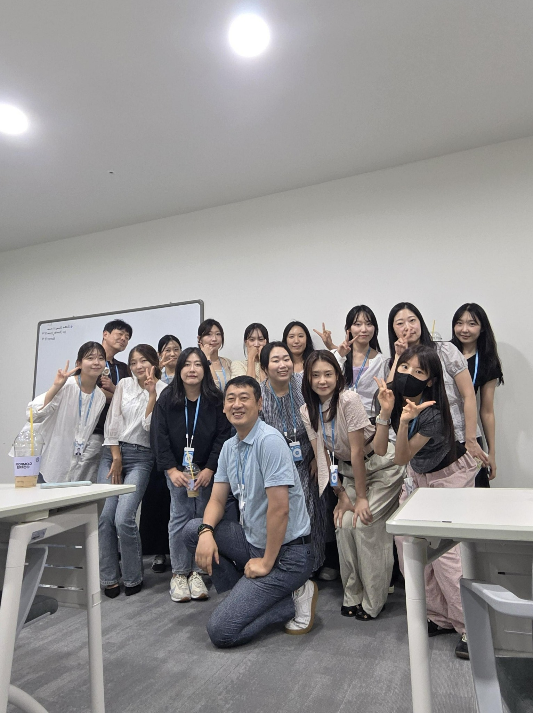

Presentation Record 08
AI 시대 우리의 마케팅 방향은?
발표 기록
김동남 CP
검색의 종착지가 링크에서 AI 답변으로 이동하는 변화에 맞춰, 비상교육이 AI 추천의 근거로 선택되기 위한 2027 콘텐츠 전략과 측정 체계를 제안한 발표.
공식 정보, 전문 콘텐츠, 실제 후기, 상품 데이터의 일관성을 높이고 고객 질문을 기준으로 콘텐츠를 설계해 AI 답변의 추천 후보에 진입하는 전략을 설명합니다.

Presentation Record 08
발표 기록
김동남 CP
검색의 종착지가 링크에서 AI 답변으로 이동하는 변화에 맞춰, 비상교육이 AI 추천의 근거로 선택되기 위한 2027 콘텐츠 전략과 측정 체계를 제안한 발표.
공식 정보, 전문 콘텐츠, 실제 후기, 상품 데이터의 일관성을 높이고 고객 질문을 기준으로 콘텐츠를 설계해 AI 답변의 추천 후보에 진입하는 전략을 설명합니다.

과거에는 키워드를 입력하고 검색 결과를 클릭했다면, 현재는 AI가 여러 출처를 요약해 답변합니다. 앞으로는 사용자의 상황을 이해한 AI가 비교와 추천까지 담당할 가능성이 커집니다.
단순한 AI 노출이 아니라 고객이 교육을 질문할 때 비상교육의 콘텐츠와 브랜드가 신뢰할 수 있는 답의 근거가 되는 것을 목표로 삼습니다.
자사 웹사이트와 비바샘의 공식 정보, 블로그·뉴스·연구의 전문성, 교사·학부모·학생 후기, 서점과 유통 플랫폼의 상품 데이터, 영상과 SNS의 경험 콘텐츠가 함께 AI 추천의 근거를 만듭니다.
한 채널의 홍보 문구보다 공식 정보, 전문가 의견, 실사용 경험, 상품 데이터가 같은 사실을 말할 때 추천 가능성이 높아집니다. 채널별 콘텐츠가 서로를 증명하도록 설계해야 합니다.
상품명을 중심으로 콘텐츠를 만드는 방식에서 벗어나 학년, 수준, 학습 목적, 비교 대상, 선행 여부처럼 고객이 실제로 묻는 질문에서 기획을 시작합니다. 질문 100개는 100개의 추천 진입점이 됩니다.
상품 정보 표준화, 질문형·비교형 콘텐츠 확대, 외부 권위 출처 확보, 채널별 정보 일치, 실사용 후기의 데이터화, AI별 추천 결과 모니터링이 팀별 과제로 제시됐습니다.
핵심 소비자 질문에서 자사 브랜드가 추천되는 비율을 AI Share of Recommendation으로 정의합니다. AI 언급률, TOP3 추천률, 출처 점유율, 질문 커버리지, 정보 일치율을 함께 살펴야 합니다.
브랜드명을 넣지 않은 고정 질문을 여러 AI에 같은 주기로 입력하고 추천, 순위, 출처와 경쟁사를 기록합니다. 절대값보다 동일 질문에서 추천 점유율이 상승하는지를 추세로 관리합니다.